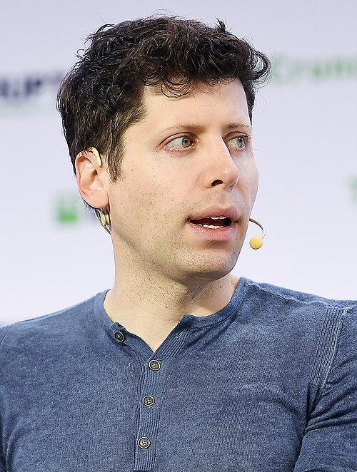

Altman creció en San Luis (Misuri), en una familia judía, como el mayor de cuatro hermanos. Su madre es dermatóloga y
su padre era un agente inmobiliario. Recibió su primera computadora a la edad de ocho años.[8] Asistió a la escuela
secundaria J
ohn Burroughs y estudió Ciencias de la Computación en la Universidad de Stanford hasta que abandonó los estudios en
2005.[9]
En 2017, recibió un título honorario de la Universidad de Waterloo.[10
En 2005, a los diecinueve años,[11] Altman cofundó y se convirtió en director ejecutivo de Loopt,[12]
una aplicación móvil de redes sociales basada en la ubicación. Después de recaudar más de $30 millones en c
apital de riesgo, Loopt se cerró en 2012 después de no poder obtener tracción. Fue adquirida por Green Dot
Corporation por $43.4 millones.[13][14